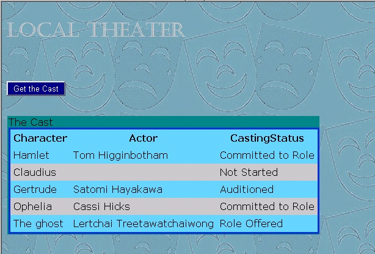

This sample hybrid app shows how to include a remote ASP.NET web application and classic SharePoint components in the same app for SharePoint.
It also shows how to use the SharePoint REST APIs to perform Read operations on SharePoint lists and list items, and how to retrieve only selected fields from the list. The app displays all of the items in a custom list that
the app deploys to the app web.
The default.aspx page of the app appears after you launch the app and choose the
Get the Cast button.
Figure 1. default.aspx page in the app

The sample demonstrates how to read data using the OData protocol from REST endpoints. Additionally, it demonstrates how to parse Atom-formatted XML returned from these endpoints by using the classes of the
System.Xml.Linq namespace. (Other samples of apps for SharePoint show how to do this by using the classes of the
System.Xml namespace.)
For more information about the SharePoint REST APIs, see the topic
Programming using the SharePoint 2013 Preview REST service in the SharePoint 2013 Preview developer documentation. For more information about working with Atom and OData, see
OData: AtomPub Format.
Prerequisites
- A SharePoint 2013 development environment that is configured for app isolation and OAuth.
- Visual Studio 2012 and SharePoint development tools in Visual Studio 2012.
Important contents
- TheaterCompany project, which contains the AppManifest.xml file, the feature.xml file, and various XML files that define the SharePoint components.
- TheaterCompanyWeb project.
- Default.aspx file, which contains the HTML and ASP.NET controls for the user interface of the app.
- Default.aspx.cs file, which contains the C# code that uses the REST APIs to read data.
- Web.config, web.debug.config, and web.release,config files. (The web.config file that is packaged with the app is a merger of web.config and either web.debug.config or web.release,config.)
Configuration instructions
- Open the TheaterCompany.sln file in Visual Studio.
- In Properties pane of Visual Studio, change the
Site URL property of the app for SharePoint project in Visual Studio to the absolute URL of your SharePoint 2013 Preview developer test site. For example, "http://MyDevServer/sites/MyTestSite".
Build instructions
• Choose the top solution node
TheaterCompany in Solution Explorer. On the menu bar, choose
Build, Build Solution.
Deploying and testing the sample
- Choose the F5 key. The web application,
TheaterCompanyWeb, is deployed to IIS Express at the URL specified in the SSL URL property of the project. The
TheaterCompany app is installed to your test SharePoint website. (The remote app does not try to interact with the host web, and the app principal automatically has permissions to the app web, so you are not prompted to grant permissions.)
The Site Contents page of your target SharePoint website opens, and you can see the new app listed there.
- Choose the Theater Company app, and the remote web application opens to its default page. Depending on your browser, there may or may not be a background with the classic comedy and tragedy masks as shown in
Figure 1. If the browser cannot open the background file, a sea green background is seen. Choose the
Get the Cast button. A grid that is partially populated with data should open, as shown in Figure 1.
Change log
First release.
Related content
Contact info
DocThis@microsoft.com